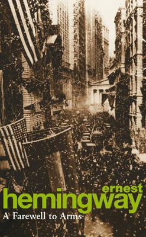
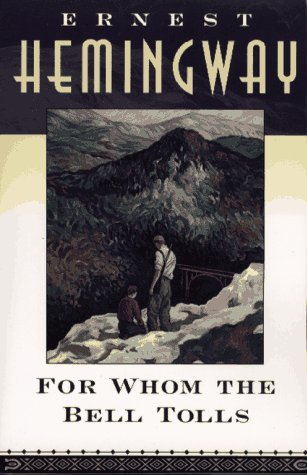
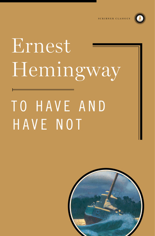
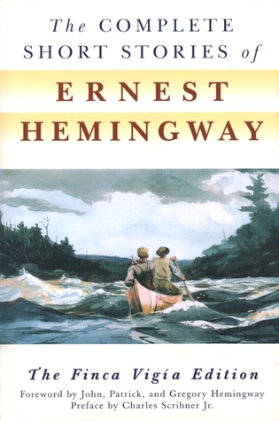
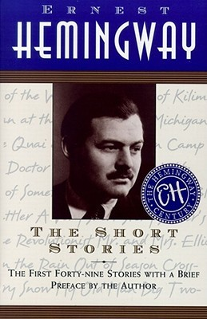

The Old Man and the Sea
Some of Ernest Miller's best


A Farewell to Arms
A Farewell to Arms is the unforgettable story of an American ambulance driver on the Italian front and his passion for a beautiful English nurse. Set against the looming horrors of the battlefield - the weary, demoralized men marching in the rain during the German attack on Caporetto; the profound struggle between loyalty and desertion—this gripping, semiautobiographical work captures the harsh realities of war and the pain of lovers caught in its inexorable sweep. Ernest Hemingway famously said that he rewrote his ending to A Farewell to Arms thirty-nine times to get the words right.

For Whom the Bell Tolls
In 1937 Ernest Hemingway traveled to Spain to cover the civil war there for the North American Newspaper Alliance. Three years later he completed the greatest novel to emerge from "the good fight," For Whom the Bell Tolls. The story of Robert Jordan, a young American in the International Brigades attached to an antifascist guerilla unit in the mountains of Spain, it tells of loyalty and courage, love and defeat, and the tragic death of an ideal.

To Have and Have Not
To Have and Have Not is the dramatic story of Harry Morgan, an honest man who is forced into running contraband between Cuba and Key West as a means of keeping his crumbling family financially afloat. His adventures lead him into the world of the wealthy and dissipated yachtsmen who throng the region, and involve him in a strange and unlikely love affair.Harshly realistic

The Complete Short Stories of Ernest Hemingway
In this definitive collection of Ernest Hemingway's short stories, readers will delight in the author's most beloved classics such as "The Snows of Kilimanjaro," "Hills Like White Elephants," and "A Clean, Well-Lighted Place," and will discover seven new tales published for the first time in this collection. For Hemingway fans The Complete Short Stories is an invaluable treasury.

The Short Stories